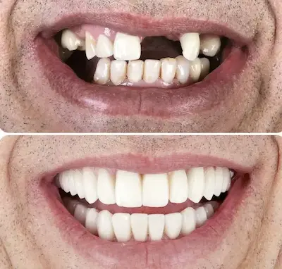
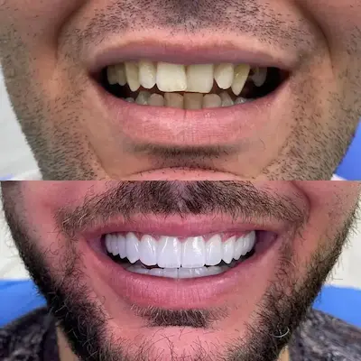
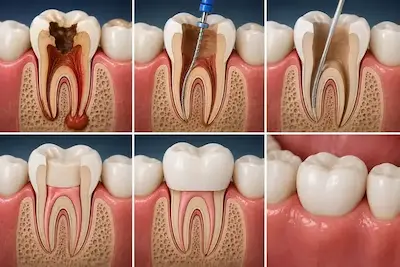
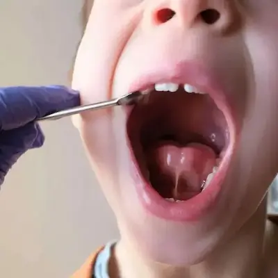

01ReabilitaçãoImplantes Dentários
Cirurgia guiada e prótese provisória no mesmo dia.
Você não precisa atravessar a cidade para ter atendimento de precisão. A Clínica Marés fica em Pedra Branca — com acesso rápido e estacionamento próprio — e recebe, todos os dias, moradores da região que buscam planejamento digital 3D, implantes, estética e ortodontia com especialistas dedicados.
A Bela Vista é um bairro residencial de Palhoça com acesso direto à Via Expressa e à BR-101, o que torna o deslocamento para Pedra Branca rápido e simples. É também uma região onde muitos moradores buscam qualidade em saúde bucal e percebem que vale a pena ir até uma clínica que entrega resultado antes do tratamento.
A proximidade com a Cidade Universitária faz com que muitos moradores da região já estejam familiarizados com Pedra Branca — seja por trabalho, estudo ou lazer. Para eles, a Clínica Marés acaba sendo uma extensão natural do que já fazem no dia a dia.
Tomografia, escaneamento e simulação 3D: você vê o sorriso pronto antes de decidir.
Sem pressa e sem empurrar procedimento. Clareza e transparência em cada etapa.
Por escrito, com revisões semestrais. Segurança para quem investe no próprio sorriso.
[INSERIR DEPOIMENTO REAL DE PACIENTE DA BELA VISTA]
[INSERIR DEPOIMENTO REAL DE PACIENTE DA BELA VISTA]
A resposta depende do que você prioriza. Se o critério for apenas proximidade, qualquer consultório no bairro pode servir. Mas se você valoriza planejamento digital 3D, simulação do resultado antes de começar e garantia por escrito, a Clínica Marés entrega algo que a maioria das clínicas da região não tem.
O atendimento é feito com horário marcado, então você não perde tempo em filas ou salas de espera lotadas. E com estacionamento próprio, a experiência é ainda mais tranquila.
Clínica Marés

01ReabilitaçãoCirurgia guiada e prótese provisória no mesmo dia.

02SorrisoLentes, facetas e clareamento com mock-up digital.

03AlinhamentoInvisalign e fixo com primeiro alinhador em 3 semanas.
 04Prevenção
04Prevenção
Prevenção e manutenção para toda a família.
 05Salvamento
05Salvamento
Canal com microscopia e recuperação rápida.

06InfânciaPrimeira consulta a partir dos 6 meses.
Não achou sua resposta? Chama no WhatsApp.
Não. Estamos em Pedra Branca, a poucos minutos dali. Ainda não temos unidade no bairro — mas atendemos muitos moradores da região.
A clínica possui estacionamento próprio e gratuito para pacientes — um ponto importante para quem vem de outros bairros.
Não trabalhamos com convênios odontológicos. Emitimos nota fiscal e recibo detalhado que a maioria dos planos de saúde de reembolso aceita.
A avaliação inicial (60 minutos) custa R$ 280. Se você seguir com o tratamento, esse valor entra como crédito na primeira etapa.
Respondemos em até 2 horas úteis. Se preferir, ligue — atendimento humano, de segunda a sábado.